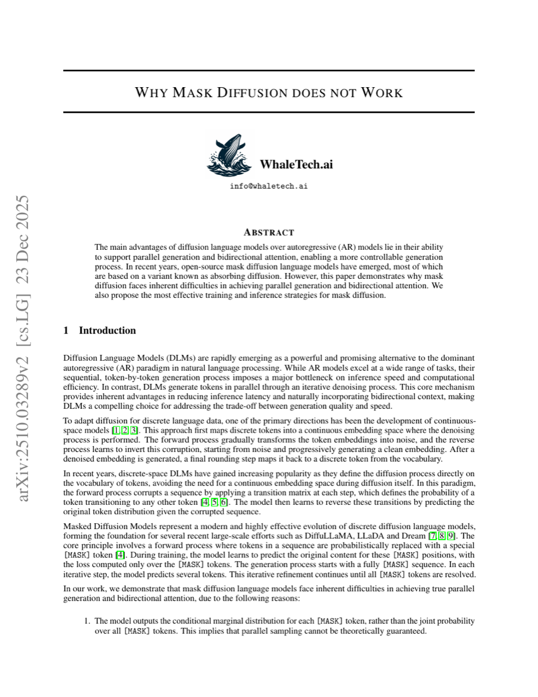
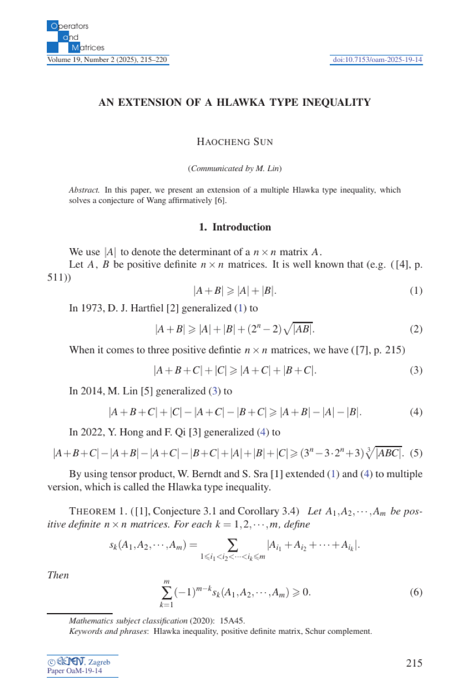

Why Mask Diffusion Does Not Work
On the structural limits of masked diffusion for coherent parallel text generation.
研究掩码扩散在连贯并行文本生成中的结构性局限。
Read paper ↗阅读论文 ↗Selected work代表作品

On the structural limits of masked diffusion for coherent parallel text generation.
研究掩码扩散在连贯并行文本生成中的结构性局限。
Read paper ↗阅读论文 ↗
A higher-dimensional extension of a determinant inequality for positive definite matrices.
将正定矩阵的一类行列式不等式推广至更高维情形。
Read paper ↗阅读论文 ↗Learning representations for PDE-governed systems and physical simulations.
研究偏微分方程系统与物理仿真的学习表示。
Data-driven discovery of governing dynamics with physical constraints.
结合数据与物理约束，发现复杂系统的控制动力学。
Training, data quality, and practical browser-use capabilities.
模型训练、数据质量与实用的浏览器操作能力。
My view is that AI is currently in a period of diminishing returns rather than a period of groundbreaking change. Much of the industry is refining established training pipelines—through scaling, data curation, and agent engineering—while few genuinely effective new paradigms have reached practice. I believe the important question is what should come next.
我的看法是，AI 目前更像处在一个边际收益递减的阶段，而不是持续出现突破性变化的阶段。业界大量工作集中在已有训练流程上继续优化——扩展算力与能源投入、精细筛选数据、打磨智能体架构——但真正有效的新范式还很少进入实践。我认为，值得追问的问题是：下一步应该是什么。
AI Research InternAI 研究实习生
AI Research InternAI 研究实习生
Physics Research Intern · Part-time物理研究实习生 · 兼职
Ph.D. in Mathematics · GPA 3.81/4.00数学博士研究生 · GPA 3.81/4.00
Exchange in Mathematics · GPA 4.00/4.00数学系交换生 · GPA 4.00/4.00
B.S. in Mathematics · GPA 3.98/4.30数学学士 · GPA 3.98/4.30